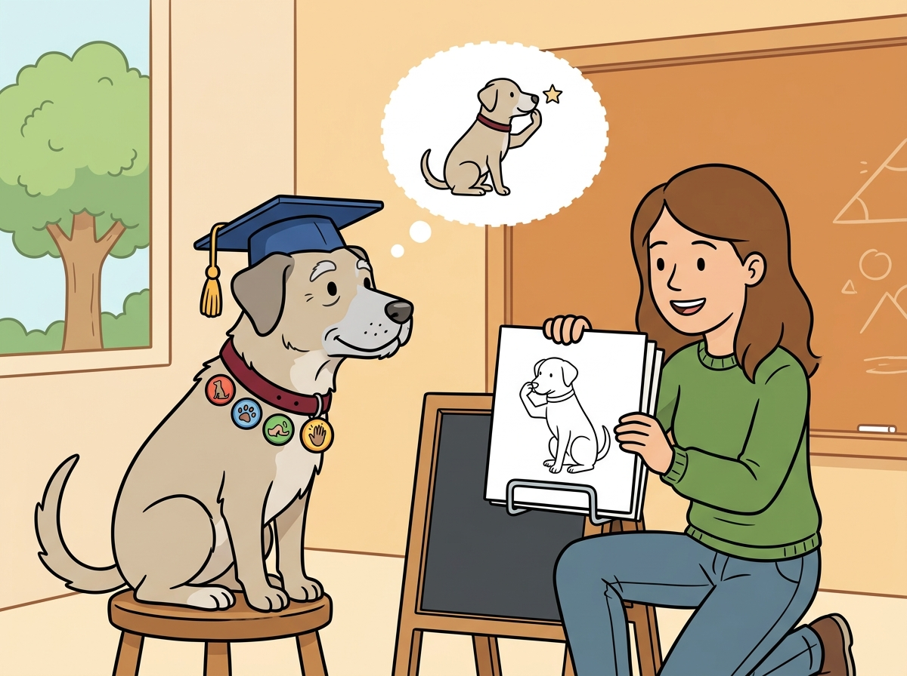
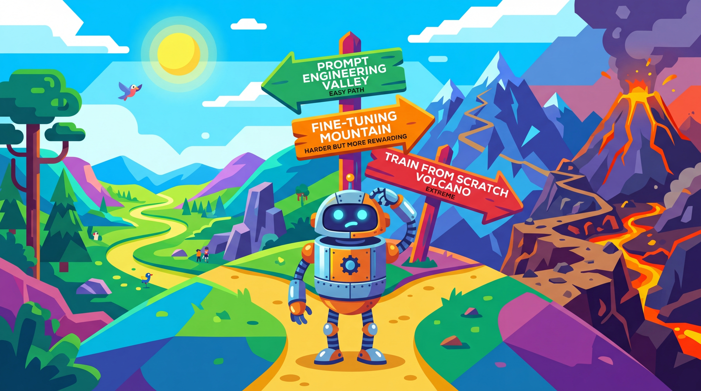

"Before you fine-tune, ask yourself: have I tried writing a better prompt? If yes, have I tried RAG? If yes, welcome. You may proceed."
Finetune AI Agent

Prerequisites
This section builds on pre-training from Section 06.1: The Landmark Models and training in pytorch covered in Section 00.3: PyTorch Tutorial.
Fine-tuning is powerful, but it is not always the right tool. Before investing in data collection, GPU hours, and training infrastructure, you need a clear framework for deciding whether fine-tuning will actually solve your problem better than prompt engineering or retrieval-augmented generation. This section provides that framework, covering the core use cases where fine-tuning excels, the different flavors of fine-tuning (full, parameter-efficient, continual pre-training), and the pitfalls that catch teams who jump to fine-tuning prematurely. The prompt engineering techniques from Chapter 11 and the hybrid architecture patterns from Section 12.1 are the alternatives to evaluate first.
For a hands-on tutorial on fine-tuning with the Hugging Face Trainer API and ecosystem tools, see Appendix K: HuggingFace Ecosystem.

1. The Adaptation Spectrum Intermediate
When a pre-trained language model does not meet your needs out of the box, you have several options for adapting it. These options form a spectrum from lightweight (no training required) to heavyweight (full model retraining). Understanding where each technique sits on this spectrum is essential for making cost-effective decisions.
1.1 Prompting, RAG, and Fine-Tuning
The three primary approaches to model adaptation differ in their complexity, cost, and the types of improvements they can deliver. Prompt engineering is the simplest: you craft instructions that guide the model toward the desired behavior at inference time. RAG augments the model with external knowledge by retrieving relevant documents and injecting them into the prompt. Fine-tuning modifies the model weights themselves through additional training on task-specific data. Figure 14.1.1 places these approaches on the adaptation spectrum.
Mental Model: The Adaptation Ladder. Think of the adaptation spectrum as a ladder with increasing commitment at each rung. At the bottom, prompt engineering is like rearranging furniture in a rented apartment: zero commitment, instant changes. RAG is like hanging pictures: you add external knowledge without modifying the structure. Fine-tuning is like renovating: you change the walls (weights) themselves, which is powerful but expensive and hard to undo. Climb the ladder only when the rung below genuinely cannot solve your problem.
1.2 The Decision Framework
The following decision framework helps you determine which approach to try first. The key insight is that you should start with the lightest approach that could work and only move to heavier approaches when you have evidence that simpler methods fall short.
Fine-tuning a 7-billion-parameter model on a single GPU was science fiction in 2020. By 2024, it had become a weekend project. The pace of tooling improvement in this space makes Moore's Law look leisurely. Code Fragment 14.1.2 shows this approach in practice.
The following snippet in Code Fragment 14.1.1 demonstrates the implementation.
# Define the choose_adaptation_strategy function
# This handles the core processing logic
def choose_adaptation_strategy(task):
"""Decision framework for choosing between prompting, RAG, and fine-tuning."""
# Step 1: Can prompting solve it?
if task.can_be_described_in_prompt:
baseline = evaluate_with_prompting(task)
if baseline.meets_quality_threshold:
return "prompting" # Simplest solution that works
# Step 2: Is the gap about missing knowledge?
if task.requires_external_knowledge:
if task.knowledge_changes_frequently:
return "RAG" # Dynamic knowledge needs retrieval
if task.knowledge_is_static and task.dataset_size > 10_000:
return "fine-tuning" # Large static knowledge: bake it in
# Step 3: Is the gap about behavior or style?
if task.requires_specific_style or task.requires_specific_format:
if few_shot_examples_in_prompt_work:
return "prompting" # Few-shot can handle simple format changes
return "fine-tuning" # Complex style/format needs weight updates
# Step 4: Is the gap about latency or cost?
if task.latency_budget_ms < 200 or task.cost_per_query_budget < 0.001:
return "fine-tuning" # Smaller fine-tuned model is faster and cheaper
# Step 5: Combine approaches
return "RAG + fine-tuning" # Many production systems use bothCode Fragment 14.1.2 configures LoRA adapters.
# Quick comparison: resource requirements
def estimate_training_resources(
model_size_billions: float,
method: str = "full", # "full", "lora", "qlora"
precision: str = "fp16"
) -> dict:
"""Estimate GPU memory and storage for fine-tuning."""
bytes_per_param = {"fp32": 4, "fp16": 2, "bf16": 2, "int8": 1, "int4": 0.5}
param_bytes = bytes_per_param.get(precision, 2)
model_memory_gb = model_size_billions * 1e9 * param_bytes / (1024**3)
if method == "full":
# Model + gradients + optimizer states (AdamW: 2x for momentum)
training_memory_gb = model_memory_gb * 4 # Rough 4x multiplier
trainable_params = model_size_billions * 1e9
checkpoint_gb = model_memory_gb
elif method == "lora":
# Frozen model + small adapter gradients/optimizer
trainable_params = model_size_billions * 1e9 * 0.01 # ~1% of params
training_memory_gb = model_memory_gb + 2 # Base + adapter overhead
checkpoint_gb = 0.1 # Adapter only
elif method == "qlora":
# 4-bit quantized model + adapter
model_memory_gb = model_size_billions * 1e9 * 0.5 / (1024**3)
trainable_params = model_size_billions * 1e9 * 0.01
training_memory_gb = model_memory_gb + 2
checkpoint_gb = 0.1
return {
"method": method,
"model_size": f"{model_size_billions}B",
"training_memory_gb": round(training_memory_gb, 1),
"trainable_params": f"{trainable_params/1e6:.1f}M",
"checkpoint_size_gb": round(checkpoint_gb, 1),
"min_gpu": "A100 80GB" if training_memory_gb > 40 else "A100 40GB"
if training_memory_gb > 20 else "RTX 4090 24GB"
if training_memory_gb > 16 else "RTX 3090 24GB"
}
# Compare methods for a 7B model
for method in ["full", "lora", "qlora"]:
result = estimate_training_resources(7.0, method=method)
print(f"{method:6s}: {result['training_memory_gb']:5.1f} GB, "
f"{result['trainable_params']:>8s} params, "
f"checkpoint: {result['checkpoint_size_gb']} GB")The decision to fine-tune is fundamentally about economics, not capability. Almost any behavior achievable through fine-tuning can also be achieved through sophisticated prompting (with enough in-context examples, structured output schemas, and retrieval). The question is whether the per-inference cost of a long, example-heavy prompt exceeds the one-time cost of fine-tuning. For high-volume production endpoints processing thousands of requests per day, even a small reduction in prompt tokens pays for itself quickly. For low-volume or rapidly changing tasks, the flexibility of prompt engineering (Chapter 10) is almost always more cost-effective. See also the API cost structures in Chapter 9 for the full cost analysis framework.
4. Catastrophic Forgetting Intermediate
Catastrophic forgetting is the phenomenon where a model, after being fine-tuned on a specific task, loses its ability to perform well on other tasks it could previously handle. This happens because gradient updates that improve performance on the fine-tuning data can overwrite weights that encode general knowledge.
4.1 Symptoms and Causes
The most common symptoms of catastrophic forgetting include degraded performance on general benchmarks (MMLU, HellaSwag), loss of instruction-following ability, increased repetition or degenerate outputs, and inability to handle prompts outside the fine-tuning distribution. The primary causes are training for too many epochs, using a learning rate that is too high, training on a dataset that is too narrow in distribution, and failing to include regularization. Figure 14.1.4 shows how task-specific and general performance diverge over training. Code Fragment 14.1.3 shows this approach in practice.
4.2 Mitigation Strategies
The following implementation (Code Fragment 14.1.3) shows this approach in practice.
The following snippet in Code Fragment 14.1.3 demonstrates the implementation.
# Strategies for mitigating catastrophic forgetting
from dataclasses import dataclass
from typing import List, Optional
@dataclass
class ForgettingMitigationConfig:
"""Configuration for preventing catastrophic forgetting."""
# 1. Learning rate: use a low learning rate for fine-tuning
learning_rate: float = 2e-5 # 10x lower than pre-training
# 2. Short training: fewer epochs reduce overwriting
num_epochs: int = 3 # Rarely need more than 3-5
# 3. Data mixing: include general-purpose data
task_data_ratio: float = 0.7 # 70% task-specific
general_data_ratio: float = 0.3 # 30% general (e.g., OpenAssistant)
# 4. Regularization
weight_decay: float = 0.01
max_grad_norm: float = 1.0
# 5. Evaluation on general benchmarks during training
eval_general_benchmarks: bool = True
general_eval_datasets: List[str] = None
def __post_init__(self):
if self.general_eval_datasets is None:
self.general_eval_datasets = [
"mmlu", # General knowledge
"hellaswag", # Commonsense reasoning
"arc_easy", # Science questions
]
def get_data_mix(self, task_samples: int) -> dict:
"""Calculate how many general samples to mix in."""
general_samples = int(
task_samples * self.general_data_ratio / self.task_data_ratio
)
return {
"task_samples": task_samples,
"general_samples": general_samples,
"total": task_samples + general_samples,
"effective_task_ratio": task_samples / (task_samples + general_samples)
}
config = ForgettingMitigationConfig()
mix = config.get_data_mix(task_samples=5000)
print(f"Task: {mix['task_samples']}, General: {mix['general_samples']}, "
f"Total: {mix['total']}")Do not skip general evaluation. Many teams only measure performance on their target task during fine-tuning and discover too late that the model has lost critical general capabilities. Always evaluate on at least 2 to 3 general benchmarks at every checkpoint. If general performance drops more than 5% from the base model, you are likely overtraining.
5. Continual Pre-Training vs. Instruction Fine-Tuning Intermediate
Fine-tuning comes in two distinct flavors that serve different purposes. Continual pre-training (also called domain-adaptive pre-training) extends the original pre-training objective on domain-specific text. Instruction fine-tuning (also called supervised fine-tuning or SFT) trains the model to follow instructions and produce specific outputs. Understanding the difference is critical for choosing the right approach.
5.1 Continual Pre-Training
Continual pre-training uses the same next-token prediction objective as the original pre-training, but on a domain-specific corpus. The model learns the vocabulary, concepts, and reasoning patterns of the target domain without any explicit instruction/output pairs. This is useful when the model lacks fundamental domain knowledge.
5.2 Instruction Fine-Tuning (SFT)
Instruction fine-tuning trains the model on input/output pairs where each input is a user instruction or query and each output is the desired response. This teaches the model to follow instructions, produce specific output formats, and adopt particular behaviors. Most practical fine-tuning falls into this category.
| Aspect | Continual Pre-Training | Instruction Fine-Tuning (SFT) |
|---|---|---|
| Training objective | Next-token prediction (causal LM) | Supervised on instruction/output pairs |
| Data format | Raw text (documents, papers) | Structured pairs (instruction, response) |
| Data quantity | Millions to billions of tokens | Thousands to tens of thousands of examples |
| Purpose | Inject domain knowledge | Teach behavior and format |
| Typical use | Medical, legal, financial models | Chatbots, task-specific assistants |
| Training duration | Days to weeks | Hours to a day |
| Example | Train on 10B tokens of medical literature | Train on 10K medical Q&A pairs |
The two-stage pipeline. For domain-specific applications, the most effective approach is often a two-stage pipeline: first, continual pre-training on domain text to inject knowledge, then instruction fine-tuning to teach the model how to use that knowledge in response to user queries. This separates the "what to know" stage from the "how to behave" stage and typically produces better results than either stage alone.
Show Answer
Show Answer
Show Answer
Show Answer
Show Answer
For most fine-tuning tasks, 1,000 carefully curated examples outperform 10,000 noisy ones. Invest time in data quality over data quantity. Clean, consistent, well-formatted training examples teach the model your task faster than bulk data with errors.
Key Takeaways
- Start with prompting, then RAG, and only fine-tune when you have evidence that simpler approaches are insufficient for your quality, latency, or cost requirements.
- Fine-tuning excels at style adaptation, output format enforcement, latency/cost optimization through model distillation, and injecting stable domain knowledge.
- RAG is better for dynamic knowledge that changes frequently, as fine-tuned knowledge becomes stale.
- Parameter-efficient methods (LoRA, QLoRA) achieve within 1 to 3% of full fine-tuning performance while using 10x less memory and enabling multi-task serving with swappable adapters.
- Catastrophic forgetting is mitigated by using low learning rates, short training schedules, data mixing with general-purpose examples, and continuous evaluation on general benchmarks.
- Two-stage fine-tuning (continual pre-training for knowledge, then SFT for behavior) is often the most effective approach for domain-specific applications.
Who: A clinical AI team at a healthcare startup building a Q&A system that answers physician questions about drug interactions and dosing guidelines.
Situation: They had access to a curated database of 15,000 drug interaction records and 3,000 dosing guidelines. Their initial GPT-4 prompt-based system answered 72% of questions correctly, but hallucinated plausible-sounding but incorrect dosing information for the remaining 28%.
Problem: Incorrect dosing information in a medical context is a patient safety risk. They needed to reach 95%+ accuracy on their test set of 500 physician-validated questions.
Dilemma: They could improve prompting with more examples and constraints (quick, limited ceiling), implement RAG to ground answers in their drug database (addresses hallucination but adds retrieval latency), or fine-tune a model on their Q&A pairs (best accuracy potential but requires data preparation and ongoing maintenance).
Decision: They implemented a staged approach: first RAG (which raised accuracy to 89%), then fine-tuned a Llama 2 7B model on 8,000 physician-validated Q&A pairs to serve as a specialized reader on top of retrieved documents. The fine-tuned model learned to cite sources and say "insufficient information" when the retrieved context did not support an answer.
How: RAG used a dense retriever over their drug database with re-ranking. For fine-tuning, they formatted each example as a context-question-answer triple where the answer always included a source citation or an explicit abstention. They used QLoRA to fine-tune on a single A100 GPU in 4 hours.
Result: The RAG plus fine-tuned model achieved 96.2% accuracy on the test set. Hallucinated dosing information dropped from 28% to 1.4%, and the model correctly abstained on 85% of questions where the database lacked sufficient information (compared to 12% abstention rate with prompting alone). Inference latency was 800ms including retrieval.
Lesson: The prompting-then-RAG-then-fine-tuning ladder is not just about accuracy; each step addresses different failure modes. RAG fixes knowledge gaps, while fine-tuning fixes behavioral patterns like hallucination and appropriate abstention.
The boundary between prompting and fine-tuning is blurring with techniques like in-context learning distillation, which compresses few-shot prompting behavior into model weights. Research on task arithmetic suggests that fine-tuning creates interpretable weight deltas that can be composed, negated, or scaled to control model behavior without retraining. An open question is whether future models will make fine-tuning obsolete through sufficiently powerful in-context learning, or whether weight-level adaptation will always offer efficiency advantages.
Exercises
List three scenarios where fine-tuning is clearly preferable to prompt engineering, and three scenarios where prompt engineering is sufficient.
Answer Sketch
Fine-tune when: (1) you need consistent style/format across thousands of outputs (e.g., company voice), (2) latency is critical and you want shorter prompts (fine-tuned models need less instruction), (3) you have domain-specific knowledge not in the base model's training data. Prompt engineering is sufficient when: (1) the task changes frequently, (2) you have few examples (<50), (3) you need rapid iteration without retraining.
A team wants their model to answer questions about their internal documentation. Compare fine-tuning on the docs versus using RAG. When would you choose each?
Answer Sketch
RAG: preferred when docs change frequently (new policies, product updates) because you update the retrieval index without retraining. Also preferred when you need citations and source attribution. Fine-tuning: preferred when you want the model to internalize a consistent style or domain vocabulary, when retrieval latency is unacceptable, or when the knowledge is procedural (how to do things) rather than factual (what the answer is). Many teams use both: fine-tune for style, RAG for facts.
Write a function that estimates whether fine-tuning is cost-effective compared to a longer prompt. Inputs: number of monthly requests, prompt length with/without fine-tuning, fine-tuning cost, and per-token API prices.
Answer Sketch
Calculate monthly cost for each approach: prompt_cost = requests * (long_prompt_tokens / 1000) * input_price + requests * (output_tokens / 1000) * output_price. ft_cost = requests * (short_prompt_tokens / 1000) * ft_input_price + requests * (output_tokens / 1000) * ft_output_price + monthly_amortized_training_cost. Return whichever is cheaper. Fine-tuning typically pays for itself above 10K to 100K monthly requests.
Explain catastrophic forgetting in the context of LLM fine-tuning. What happens to a model's general capabilities when you fine-tune it extensively on a narrow domain?
Answer Sketch
Catastrophic forgetting occurs when fine-tuning on new data overwrites the model's previously learned representations. A model fine-tuned heavily on legal text may lose its ability to write code or answer general knowledge questions, because the weight updates that optimize for legal tasks degrade the weights responsible for other capabilities. Mitigations: use a low learning rate, train for fewer epochs, mix in general-purpose data during fine-tuning, or use PEFT methods like LoRA that modify only a small subset of weights.
A startup has 500 labeled examples of customer intent data and wants 95% classification accuracy. Their current prompt-based approach achieves 88%. Should they fine-tune? What other options should they consider first?
Answer Sketch
Before fine-tuning, consider: (1) Improve the prompt with more few-shot examples (the current prompt may not be optimal). (2) Use a hybrid approach with a fast classifier + LLM fallback. (3) Generate more training data synthetically to supplement the 500 examples. If these fail, fine-tuning with 500 examples may work but is risky for overfitting. Consider PEFT (LoRA) to reduce overfitting risk, and always hold out 100 examples for evaluation.
What Comes Next
In the next section, Section 14.2: Data Preparation for Fine-Tuning, we cover data preparation for fine-tuning, including format selection, data quality requirements, and dataset construction.
The decision to fine-tune should start with "Have I exhausted prompt engineering?" In practice, most teams fine-tune too early. It is the ML equivalent of remodeling your kitchen when all you needed was a better recipe.
Hu, E. J. et al. (2022). LoRA: Low-Rank Adaptation of Large Language Models. ICLR 2022.
Introduces Low-Rank Adaptation, which freezes pre-trained weights and trains small rank-decomposition matrices instead, reducing trainable parameters by 10,000x. LoRA is the most widely used parameter-efficient fine-tuning method and is central to the decision framework in this section. Required reading before choosing any fine-tuning approach.
Dettmers, T. et al. (2023). QLoRA: Efficient Finetuning of Quantized Language Models. NeurIPS 2023.
Combines 4-bit quantization with LoRA to enable fine-tuning of 65B parameter models on a single 48GB GPU. QLoRA democratized large-model fine-tuning and is the practical starting point for most teams with limited GPU budgets. Essential for understanding the cost and hardware requirements discussed in this section.
Sun, T. et al. (2024). A Survey of Fine-Tuning Large Language Models.
A comprehensive survey covering the full landscape of LLM fine-tuning: SFT, RLHF, PEFT methods, data strategies, and evaluation approaches. This survey provides broader context for the decision framework presented here. Ideal for readers who want a panoramic view of all fine-tuning options before diving deeper.
Ovadia, O. et al. (2024). Fine-Tuning or Retrieval? Comparing Knowledge Injection in LLMs.
Provides rigorous empirical comparisons between fine-tuning and RAG for knowledge injection, showing when each approach wins. This paper directly informs the "prompting vs. RAG vs. fine-tuning" decision ladder in this section. Critical reading for teams deciding between retrieval and training approaches.
Introduces Elastic Weight Consolidation (EWC) for mitigating catastrophic forgetting, where fine-tuning on new tasks destroys performance on previously learned ones. Understanding catastrophic forgetting is essential for the risk assessment in the fine-tuning decision framework. Recommended for teams planning continual learning workflows.
Demonstrates that continued pre-training on domain-specific text before task-specific fine-tuning consistently improves performance. This two-stage approach (domain-adapt then task-adapt) is a key pattern in the fine-tuning strategy discussed here. Valuable for teams working in specialized domains like biomedical, legal, or financial text.